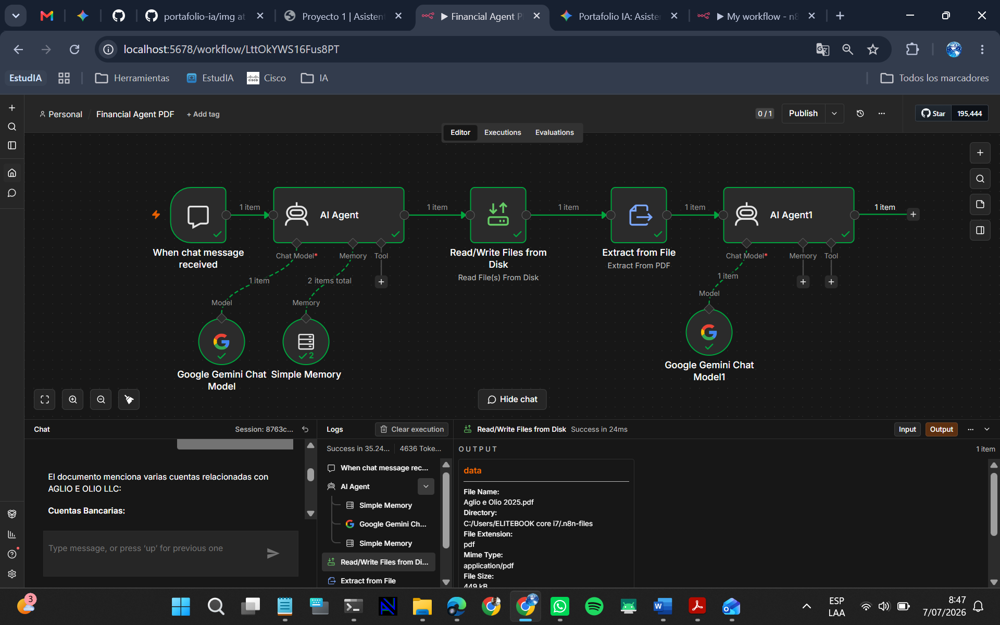
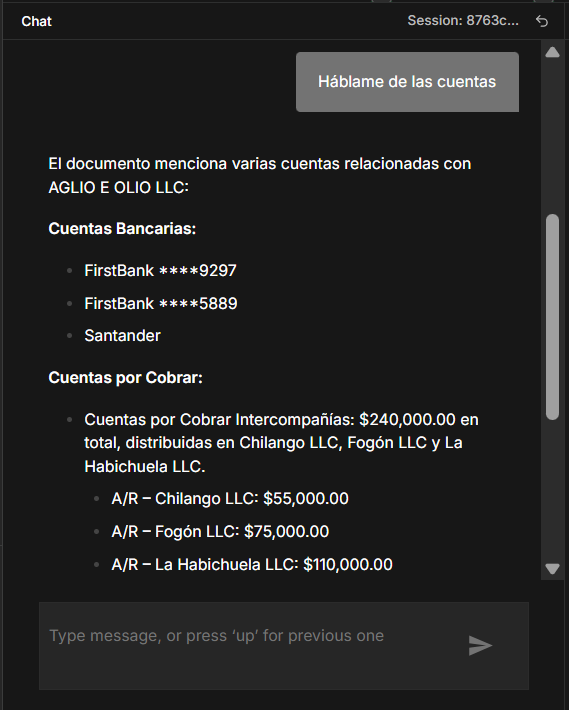

📌 Descripción
Desarrollo de un asistente basado en Inteligencia Artificial capaz de analizar estados financieros en formato PDF y responder preguntas en lenguaje natural utilizando Google Gemini y n8n.
🎯 Objetivo
Automatizar el análisis de documentos financieros para facilitar la consulta de información relevante de forma rápida y precisa.
❗ Problema
Los estados financieros contienen grandes volúmenes de información que requieren tiempo para ser revisados manualmente. Esto dificulta identificar rápidamente indicadores como ingresos, gastos, pérdidas y otros datos relevantes para la toma de decisiones.
💡 Solución
Se desarrolló un asistente basado en Inteligencia Artificial utilizando n8n y Google Gemini que permite leer documentos PDF, extraer automáticamente su contenido y responder preguntas en lenguaje natural sobre la información financiera.
📈 Resultados obtenidos
- ✅ Automatización del análisis de estados financieros en formato PDF.
- ✅ Respuesta automática a preguntas en lenguaje natural.
- ✅ Extracción precisa de información financiera mediante IA.
- ✅ Reducción del tiempo de consulta de información relevante.
- ✅ Integración exitosa entre n8n y Google Gemini.
📷 Evidencias del proyecto

Flujo de automatización desarrollado en n8n.

Respuesta generada por el asistente utilizando Google Gemini.